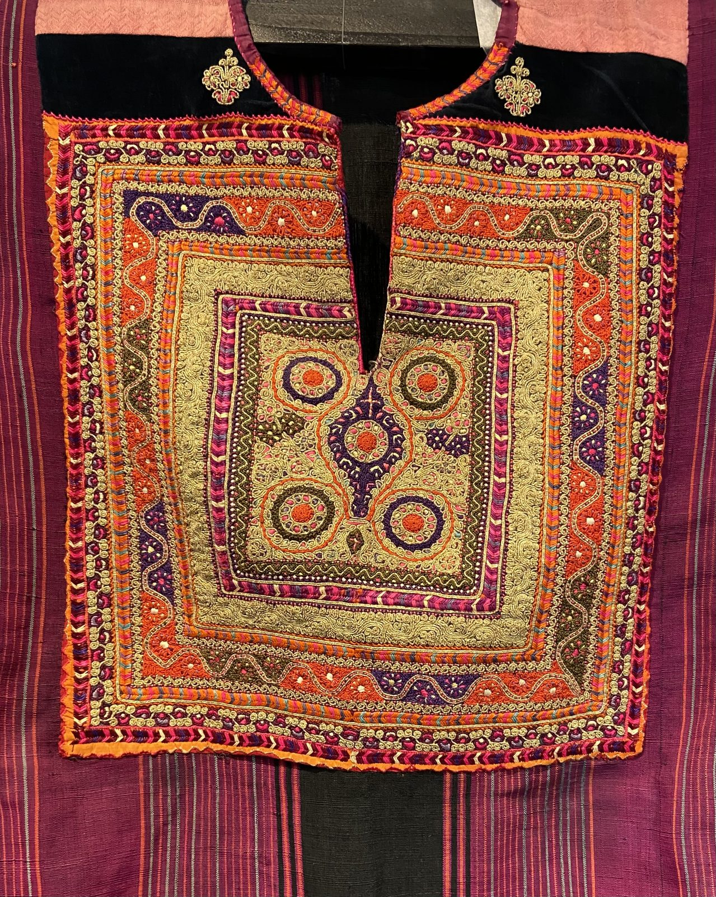
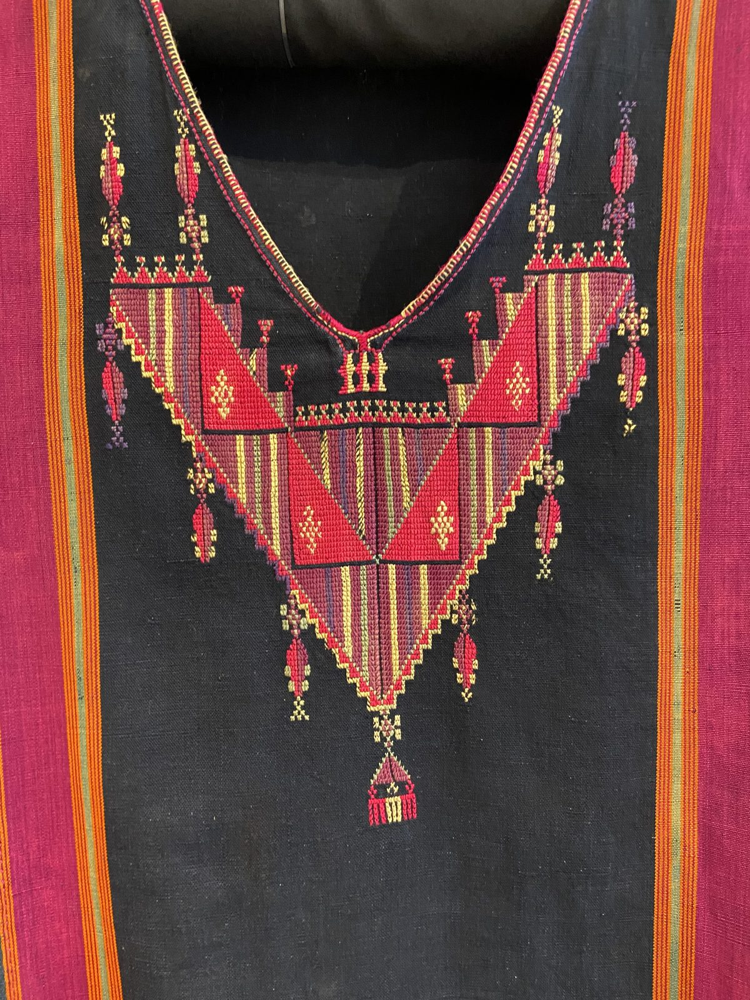
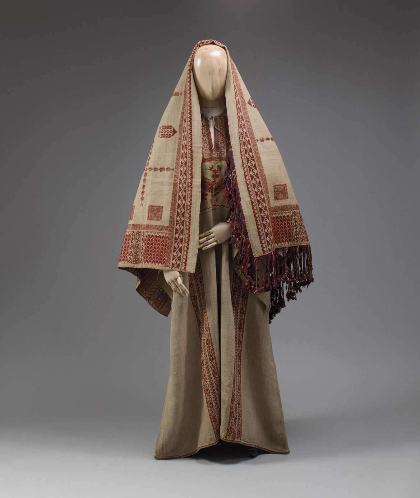
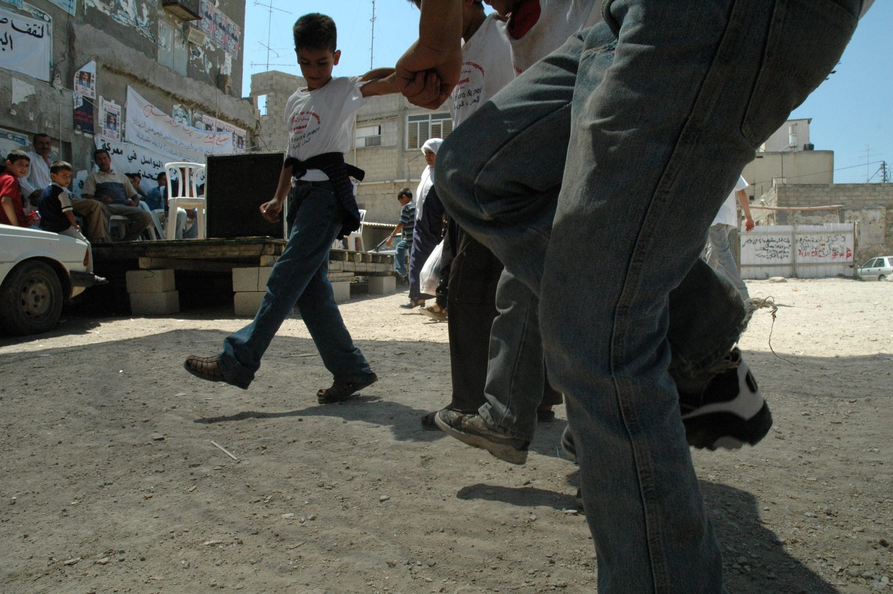
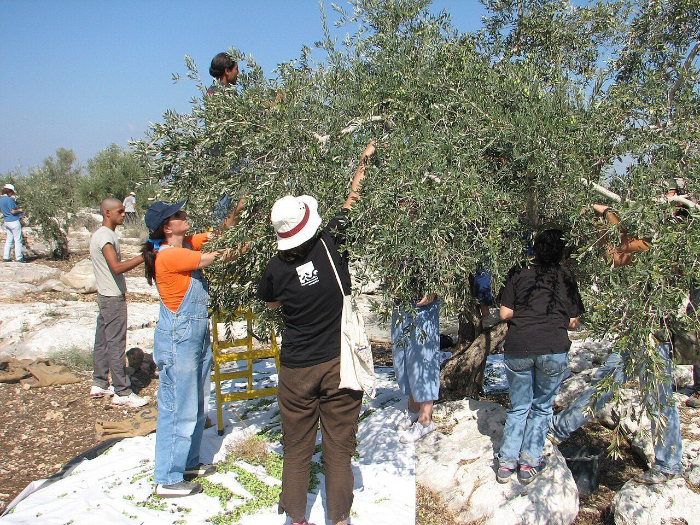
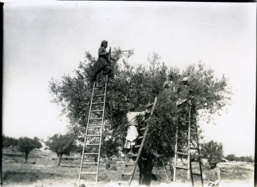

Volkskultur, nicht Folklore
Palästinensische Alltagskultur wird international oft nur über den Konflikt wahrgenommen – oder umgekehrt verklärend als zeitloses „Landleben“ verharmlost. Diese Seite versucht beides zu vermeiden: Sie stellt Kleidung, Musik, Küche und Bräuche so dar, wie sie in ethnografischer und kulturwissenschaftlicher Fachliteratur, in Museumssammlungen und in der offiziellen UNESCO-Dokumentation belegt sind – mit Regionen, Namen und Jahreszahlen, wo immer möglich, und mit offener Kennzeichnung, wo eine Behauptung nur populäre Überlieferung statt gesicherte Forschung ist.
Tatreez
Kreuzstich-Stickerei, an der sich einst das Dorf einer Frau ablesen ließ – 2021 von der UNESCO als immaterielles Kulturerbe der Menschheit anerkannt.
Zum Abschnitt →Thob und Kufiya
Fünf Regionen, fünf Stickstile – und ein Kopftuch, das 1936 vom Bauernkleidungsstück zum politischen Symbol wurde.
Zum Abschnitt →Dabke, Oud, Mijwiz
Der Stampftanz der Dörfer und die Instrumente, die ihn begleiten – dokumentiert u. a. im Tagebuch eines Jerusalemer Oud-Spielers.
Zum Abschnitt →Musakhan, Maqluba, Knafeh
Drei Gerichte mit eigener Herkunftsgeschichte – und der Olivenbaum, der Küche, Wirtschaft und Familienleben zugleich prägt.
Zum Abschnitt →Hochzeit und Alltag
Henna-Abend, Dabke und Brautkleid – mit offenem Hinweis darauf, wo die Quellenlage dünner ist als bei den übrigen Themen.
Zum Abschnitt →Tatreez: Stickerei als Landkarte und Erinnerung
„Tatreez“ (تطريز) bezeichnet die palästinensische Kreuzstichstickerei, mit der vor allem der Thob – das lange, weite Frauenkleid – verziert wird. In der Presse und in populären Darstellungen kursiert häufig die Behauptung, die Technik sei „3.000 Jahre alt“ und gehe auf kanaanitisch-phönizische Webtraditionen zurück; diese Datierung lässt sich in der geprüften Fachliteratur nicht bestätigen. Solider belegt ist eine andere, jüngere Geschichte: Nach der Feldforschung der britischen Textilhistorikerin Shelagh Weir (ehemals Kuratorin für Nahost-Ethnografie am Museum of Mankind des British Museum) und der Sammlerin Hanan Karaman Munayyer lässt sich Tatreez als eigenständiger, dorfspezifischer Stil erst ab der Mitte bis zum Ende des 19. Jahrhunderts nachweisen – praktiziert von den Frauen der Dörfer, den „fellahat“. Weirs Standardwerk Palestinian Costume (1989) beruht auf mehr als zwanzig Jahren Feldforschung seit 1965/67 in Israel, den besetzten Gebieten und Jordanien.
Dorf-Kleider: Muster als Herkunftsnachweis
Bis weit ins 20. Jahrhundert war die Mobilität zwischen den Dörfern gering – und genau das machte aus Tatreez ein präzises Erkennungssystem. Farben, Motive und die Anordnung der bestickten Bahnen zeigten an, aus welchem Dorf oder welcher Stadt eine Frau stammte, und teils auch ihren Familienstand. Die UNESCO fasst das in ihrer offiziellen Beschreibung des Kulturerbes so zusammen: „the choice of colours and designs indicates the woman's regional identity and marital and economic status.“ Museumssammlungen wie die des Palestinian Museum in Birzeit und des Birzeit-Museums der gleichnamigen Universität sowie vor allem die Sammlung von Widad Kamel Kawar – seit 2014 öffentlich im Museum TIRAZ: Widad Kawar Home for Arab Dress in Amman zugänglich, mit mehr als 2.000 Trachtenstücken die weltweit umfangreichste ihrer Art – dokumentieren diese Vielfalt im Detail: Bethlehem mit dichter Gold- und Seidenstickerei, Ramallah mit feinem rosarotem Kreuzstich, Gaza mit kräftigen, von beduinischen und ägyptischen Einflüssen geprägten Farben, Hebron mit kantig-geometrischem Bordeauxrot. Kawar erhielt 2012 den Prince-Claus-Preis für ihre jahrzehntelange Sammel- und Dokumentationsarbeit.

Bildinfo ansehenBrustpanel eines Bethlehem-Thob (1930er Jahre) – dichte Gold- und Seidenstickerei, typisch für die reichste, festlichste Regionalvariante. Foto: Ma'moun Othman / TIRAZ – Widad Kawar Home for Arab Dress, CC BY-SA 4.0

Bildinfo ansehenBrustpanel eines Gaza-Thob (frühes 20. Jahrhundert) – kräftiges Schwarz-Rot, von beduinischer und ägyptischer Nachbarschaft geprägt. Foto: Ma'moun Othman / TIRAZ – Widad Kawar Home for Arab Dress, CC BY-SA 4.0
Nach der Nakba: Stickerei als Erinnerung und Widerstand
1948 wurden diese engen Dorf-Grenzen der Muster gewaltsam durchbrochen: In den Flüchtlingslagern lebten Frauen aus ganz unterschiedlichen Herkunftsorten nun Tür an Tür, und die scharfe Trennung der Regionalstile begann sich zu vermischen. Viele Frauen nahmen ihre bestickten Kleider mit ins Exil oder trugen sie weiter – als sichtbaren Beleg, dass es das eigene Dorf, oft längst zerstört oder entvölkert, tatsächlich gegeben hatte. Ab den 1970er- und 1980er-Jahren entstand eine gezielte Wiederbelebung: In Flüchtlingslagern gegründete Stickerei-Werkstätten – etwa die 1969 im Libanon gegründete Organisation Inaash al-Usra – verbanden Einkommenserwerb für Frauen mit kultureller Bewahrung; Stickkurse wurden zur bewussten Weitergabe eines Wissens, das sonst mit der älteren Generation verloren zu gehen drohte. Zugleich entstand ein neues, ausdrücklich politisches Motivrepertoire: sogenannte „Intifada-Kleider“ mit gestickter Palästina-Karte oder den Farben der PLO-Flagge – aus der stillen Dorf-Sprache der Muster wurde stellenweise eine explizit nationale Symbolik. Ein solches Stück, ebenfalls aus der Kawar-Sammlung, ist als „Palestinian Intifada Thobe“ dokumentiert.
Am 15. Dezember 2021 nahm das Zwischenstaatliche Komitee zur Erhaltung des immateriellen Kulturerbes der UNESCO, in seiner 16. Sitzung (pandemiebedingt virtuell, UNESCO-Hauptsitz Paris), die palästinensische Stickerei einstimmig in die Repräsentative Liste des immateriellen Kulturerbes der Menschheit auf. Offizieller Titel des Eintrags: „The art of embroidery in Palestine, practices, skills, knowledge and rituals“, Referenznummer 01722, Entscheidung 16.COM 8.b.30. Der damalige Kulturminister der Autonomiebehörde, Atef Abu Saif, erklärte, das Ministerium habe über zwei Jahre auf diese Eintragung hingearbeitet; Ministerpräsident Mohammad Shtayyeh nannte den Schritt „wichtig und zeitgemäß, um unsere palästinensische Identität, unser Erbe und unsere Erzählung zu schützen, angesichts der Versuche der Besatzung, sich anzueignen, was ihr nicht gehört“ – Hintergrund waren wiederholte Kontroversen um internationale Modelabels und eine israelische Fluggesellschaft, die Tatreez-Motive ohne Herkunftsnennung verwendet hatten.
Zur Bewahrung und Vermittlung tragen heute mehrere Institutionen bei: Das Palestinian Museum in Birzeit zeigte mit „Labour of Love: New Approaches to Palestinian Embroidery“ über 80 historische Thobe und Accessoires aus allen Landesteilen; das Palestinian Heritage Center in Bethlehem, 1991 von Maha Saca gegründet, verbindet Sammlung mit fairem Handel handgestickter Ware aus Dörfern und Lagern der Region.
Der Thob und die Kufiya
Fünf Regionen, fünf Stile
Bis 1948 war ein palästinensisches Kleid so präzise regional lesbar wie ein Dialekt. Nach der Dokumentation von Munayyer, Weir sowie den Sammlungen des Birzeit-Museums und von TIRAZ lassen sich grob fünf große Regionalstile unterscheiden:
Galiläa: Seidenstickerei mit spürbar syrischem Einfluss – andere Blumenmotive und Farbkombinationen als in den Stilen des Westjordanlands.
Ramallah-Gegend: feiner Kreuzstich in Rosa- und Rottönen, geometrisch angeordnet; daneben belegt das Birzeit-Museum für Ramallah auch ein schwarzes, schlichteres Alltagskleid, im Museumskatalog als „Roman Dress“ geführt.
Bethlehem: die reichste, formellste Variante – dichte, goldfadendurchwirkte Couching-Stickerei (die Technik heißt „qasab“) auf dunklem Samt oder Seide, oft als Brautkleid getragen.
Gaza: großflächige, kräftig gesättigte Motive in Rot, Grün und Orange beziehungsweise Indigo und Rot – geprägt von der Nähe zu beduinischer und ägyptischer Textilkultur.
Hebron: tiefes Bordeauxrot in dichter, kantiger geometrischer Anordnung, mit einem charakteristischen Zickzackmuster auf dem Brustpanel.
Ergänzt wurde der Thob durch aufwendigen Kopfschmuck: Auf dem historischen Foto einer Frau aus Ramallah (oben im Seitenkopf) ist eine mit Münzen besetzte Kopfbedeckung erkennbar – solche Münz-Hauben (im Birzeit-Museum u. a. als „shatwe“ katalogisiert) dienten zugleich als tragbare Ersparnis der Familie und als Statussymbol.

Bildinfo ansehenDorfkleid aus Ramallah (19. Jahrhundert) – durchgehender Kreuzstich in Rot auf handgewebtem Leinen, aus der Sammlung des Metropolitan Museum of Art. Foto: The Metropolitan Museum of Art, CC0
Die Kufiya: vom Bauerntuch zum politischen Symbol
Die Kufiya (auch Hattah) war ursprünglich ein praktisches Kopftuch der Fellachen und Beduinen gegen Sonne und Staub. In der späten osmanischen Zeit markierte sie zugleich eine Klassengrenze: Die städtische Oberschicht trug den roten Filzhut Tarbusch (Fes), wie ihn Sultan Mahmud II. popularisiert hatte, während Kufiya-Träger als „vom Land“ erkennbar waren.
Das änderte sich grundlegend im Arabischen Aufstand von 1936 bis 1939. Aufständische nutzten die Kufiya zunächst, um ihr Gesicht vor den britischen Mandatsbehörden zu verbergen. 1938 ging die Aufstandsführung einen Schritt weiter und ordnete an, dass auch Stadtbewohner den Tarbusch ablegen und stattdessen Kufiya tragen sollten – ein doppelter Effekt: Er demonstrierte nationale Einheit über die Stadt-Land-Grenze hinweg, und er machte es Kämpfern leichter, unauffällig in der Stadtbevölkerung unterzutauchen. Als die britische Verwaltung versuchte, das Tragen der Kufiya einzudämmen, trugen Palästinenser sie erst recht massenhaft – aus einem Alltagskleidungsstück war ein politisches Symbol geworden. Die grundlegende akademische Aufarbeitung dieser Entwicklung stammt vom Kulturanthropologen Ted Swedenburg (University of Arkansas), u. a. in seinem Buch Memories of Revolt: The 1936-39 Rebellion and the Palestinian National Past (1995) und dem Aufsatz „The Palestinian Peasant as National Signifier“ (Anthropological Quarterly, 1990).
Ab den 1960er-Jahren griffen Fedayeen-Kämpfer und die PLO die Kufiya erneut auf; durch Jassir Arafats beständiges öffentliches Tragen wurde sie zum weltweit bekanntesten palästinensischen Symbol überhaupt – ein Bedeutungswandel, der auf der Menschen-Seite dieser Website auch am Foto der PFLP-Aktivistin Leila Chaled mit Kufiya und Gewehr sichtbar wird. Innerhalb Palästinas produziert seit 1961 die Fabrik Hirbawi in Hebron, gegründet von Yasser Hirbawi, die traditionelle schwarz-weiße Webware; Presseberichte (BBC, The National, Middle East Monitor) beschreiben sie übereinstimmend als die letzte noch aktive Kufiya-Weberei im Land, nachdem die Produktion – konfrontiert mit billigen Importen aus China – 2008 auf rund 100 Stück täglich gesunken war und sich seither durch internationale Solidaritätskäufe wieder erholt hat.
Dabke, Oud und die Aufzeichnungen eines Jerusalemer Musikers
Dabke: der Stampftanz
Dabke (von arabisch „dabaka“, stampfen) ist ein levantinischer Gruppentanz, der neben Palästina auch in Libanon, Syrien und Jordanien verbreitet ist. Getanzt wird in Linien- oder Kreisformation mit synchronem, kraftvollem Fußstampfen, angeführt von einem „lawweeh“ (Vortänzer), der die Schrittfolge improvisierend variiert. Eine verbreitete, aber nur volkskundlich-anekdotisch belegte Ursprungserzählung führt den Tanz auf die gemeinschaftliche Arbeit beim Hausbau zurück: Die traditionellen Dächer aus Lehm und Stroh mussten von vielen Menschen gleichzeitig gleichmäßig festgestampft werden, woraus sich der rhythmische Gruppentanz entwickelt haben soll. Belegt ist dagegen die zentrale gesellschaftliche Funktion: Dabke gehörte über Generationen zu Hochzeiten, Erntefesten und Dorffeiern, wobei sich die genaue Schrittfolge von Region zu Region unterscheidet. Unter der israelischen Militärverwaltung, der die palästinensische Bevölkerung in Israel von 1948 bis 1966 unterstand, und generell seit der Nakba wird der Tanz zunehmend auch als Ausdruck kultureller Beharrung und Identität gelesen, nicht mehr nur als Festvergnügen.

Instrumente
- Oud: die birnenförmige Kurzhalslaute, Kerninstrument der arabischen Musik überhaupt.
- Mijwiz: eine Doppelrohrblatt-„Klarinette“ aus zwei parallel geführten Rohren, deren durchdringender Klang den typischen Dabke-Sound prägt.
- Yarghul (Arghul): verwandtes Blasinstrument mit einem zusätzlichen, tiefen Bordunrohr.
- Tabla (Derbake): die Bechertrommel, rhythmisches Rückgrat der Feiern.
- Daff: die Rahmentrommel, häufig bei Gesang und Frauenfesten eingesetzt.
Musakhan, Maqluba, Knafeh – und der Olivenbaum

Musakhan: das „Nationalgericht“
Musakhan wird regional im Raum Tulkarm und Jenin verortet und gilt vielen Palästinensern als inoffizielles Nationalgericht: geröstetes Hähnchen mit karamellisierten Zwiebeln, reichlich Sumach, Piment und gerösteten Pinienkernen, serviert auf Taboon-Fladenbrot aus dem traditionellen Lehmofen. Die verbreitete Erzählung, das Gericht sei „aus Versehen“ entstanden, als Fleisch und Brot gemeinsam im Gemeinschaftsofen gebacken wurden und sich ihre Aromen vermischten, ist kulinarhistorische Überlieferung, keine belegte Quellenaussage – sie wird hier deshalb ausdrücklich als Erzählung und nicht als gesicherte Herkunftsgeschichte wiedergegeben.
Maqluba: „das Umgedrehte“
Geschichtete Reisgerichte mit Fleisch und frittiertem Gemüse haben in der Levante eine lange Geschichte, die sich bis in mittelalterliche arabische Kochbücher des 13. Jahrhunderts zurückverfolgen lässt – Maqluba ist damit keine palästinensische Erfindung im engen Sinn, sondern eine regionale Ausprägung einer älteren Kochtradition. Die populäre Anekdote, der Name gehe auf ein Lob Sultan Saladins nach der Rückeroberung Jerusalems 1187 zurück, ist eine Legende ohne belegte historische Grundlage. Was das Gericht bis heute auszeichnet, ist der gemeinsame Moment beim Servieren: Reis, Fleisch – meist Huhn oder Lamm – und frittiertes Gemüse wie Aubergine, Blumenkohl oder Kartoffel werden in einem Topf geschichtet gegart und beim Auftischen in einer Bewegung gestürzt, sodass sich die Schichtung von unten nach oben zeigt. Dieser Moment des gemeinsamen „Umdrehens“ macht Maqluba zu einem sozialen, familienzentrierten Gericht.
Knafeh Nabulsiyeh: das Erbe von Nablus
Knafeh – feiner Fadenteig (Kadayif), gefüllt mit dem Frischkäse Akkawi, in Zuckersirup getränkt und mit Pistazien bestreut – wird zwar in der gesamten Region zubereitet, gilt aber in seiner charakteristischen, orange-rot gefärbten Form als Erfindung der Stadt Nablus. Kulinarhistorische Darstellungen verorten die Entstehung grob zwischen dem 10. und 15. Jahrhundert, ohne dass sich das genaue Datum akademisch exakt belegen ließe. Nablus war über Jahrhunderte ein Zentrum des Zuckerhandels und der Konditorei – dieselbe Handwerkstradition, die auch die auf dieser Website bereits dokumentierte Nabulsi- Olivenölseife hervorbrachte: zwei unterschiedliche Produkte, aber ein gemeinsames städtisches Handwerksethos.
Der Olivenbaum: Küche, Wirtschaft und Familie in einem
Kaum eine Pflanze prägt palästinensisches Alltagsleben so sehr wie der Olivenbaum — er ist Küche, Wirtschaft und Familiengeschichte zugleich. Vier Punkte, die zusammengehören:
- 1Die Saison ist ein Familienereignis Die Olivensaison (mawsim az-zaytun) beginnt im Oktober, die Vorbereitungen bereits im September, und zieht sich bis in den November. Mehrere Generationen arbeiten gemeinsam auf dem Feld — in manchen Regionen geben Schulen eigens frei, damit Kinder beim Pflücken helfen können.
- 2Über 100.000 Familien leben davon So beziffern es Presse- und Hilfsorganisationsberichte, unter anderem UN News, der Weltkirchenrat und Al Jazeera. Einordnung der Quelle: eine Größenordnungsangabe ohne exakte akademische Primärquelle — aber durchgehend so berichtet.
- 3Drei Erzeugnisse aus derselben Frucht Olivenöl ist das zentrale Speiseöl der palästinensischen Küche; dazu kommen eingelegte Oliven und die Olivenölseife, in Nablus seit Jahrhunderten industriell verarbeitet.
- 4Ein Baum als Beleg der Verwurzelung Das Jerusalemer kulinarische Forschungsinstitut Asif beschreibt den Olivenbaum als generationenübergreifenden Bezugspunkt: Manche Bestände, etwa in Kafr Qara, gehen auf das 18. Jahrhundert zurück und dienen Familien als lebender Beleg ihrer langen Verwurzelung im Land.
Diese Verwurzelung hat, wie Asif ausdrücklich festhält, auch eine politische Dimension — entwurzelte oder beschädigte Bäume bedrohen zugleich emotionale Bindung und wirtschaftliche Existenz. Diese Seite benennt das hier bewusst nur, ohne es zu vertiefen: Für die Zerstörung von Olivenhainen als Konfliktthema verweisen wir auf die Westbank-Seite dieser Website.

Feste, Brautgabe und der Wandel der Bräuche
Für Tatreez, Kleidung und Musik ließ sich überwiegend auf Museen, die UNESCO-Dokumentation und akademische Fachliteratur zurückgreifen. Für Hochzeits- und Alltagsbräuche ist die frei zugängliche Quellenlage deutlich dünner: Die meisten online auffindbaren Beschreibungen stammen aus Hochzeits-Blogs und Eventplaner-Seiten, keine wissenschaftlichen Quellen. Diese Seite stützt sich deshalb für die gesellschaftliche Einordnung auf die Ethnografie der Anthropologin Annelies Moors und die Feldforschung von Shelagh Weir und übernimmt einzelne, in der Alltagsliteratur weit verbreitete Detailbräuche (etwa ein öffentliches Rasier-Ritual des Bräutigams) bewusst nicht, weil sie sich in keiner der geprüften Quellen wissenschaftlich verorten ließen.
Quellen und Literatur
Hauptbelege sind die offizielle UNESCO-Dokumentation, Museumssammlungen (Metropolitan Museum, Palestinian Museum/Birzeit, TIRAZ) und akademische Fachliteratur. Bei Kulinarik und Hochzeitsbräuchen wird transparent gekennzeichnet, wo nur populäre statt wissenschaftliche Quellen verfügbar waren.
Institutionen & Museen
- UNESCO ICH – „The art of embroidery in Palestine, practices, skills, knowledge and rituals“ (Ref. 01722, Entscheidung 16.COM 8.b.30, 15.12.2021)
- The Palestinian Museum (Birzeit) – Ausstellung „Labour of Love: New Approaches to Palestinian Embroidery“
- Birzeit-Museum – Sammlung Palestinian Textiles
- TIRAZ – Widad Kawar Home for Arab Dress, Amman
- Palestinian Heritage Center, Bethlehem (gegr. 1991, Maha Saca)
- Asif – Culinary Institute (Jerusalem): „Olive Tree in Palestinian Culture“
Fachliteratur
- Shelagh Weir: Palestinian Costume (British Museum Press, 1989)
- Hanan Karaman Munayyer: Traditional Palestinian Costume: Origins and Evolution (Palestinian Heritage Foundation)
- Ted Swedenburg: Memories of Revolt: The 1936-39 Rebellion and the Palestinian National Past (University of Minnesota Press, 1995)
- Annelies Moors: Women, Property and Islam: Palestinian Experiences, 1920–1990 (Cambridge UP, 1995)
- Annelies Moors: „Gender, Property and Power: Mahr and Marriage in a Palestinian Village“, in: The Gender of Power (Sage, 1991)
- Salim Tamari: Mountain against the Sea: Essays on Palestinian Society and Culture (UC Press, 2009)
- Salim Tamari / Issam Nassar (Hg.): The Storyteller of Jerusalem: The Life and Times of Wasif Jawhariyyeh, 1904–1948 (Olive Branch Press, 2014)
- Reem Kassis: The Palestinian Table (Phaidon, 2017)
Porträts von Salim Tamari und Tawfiq Canaan, dem Pionier der palästinensischen Ethnografie: → Menschen: Die Historiker